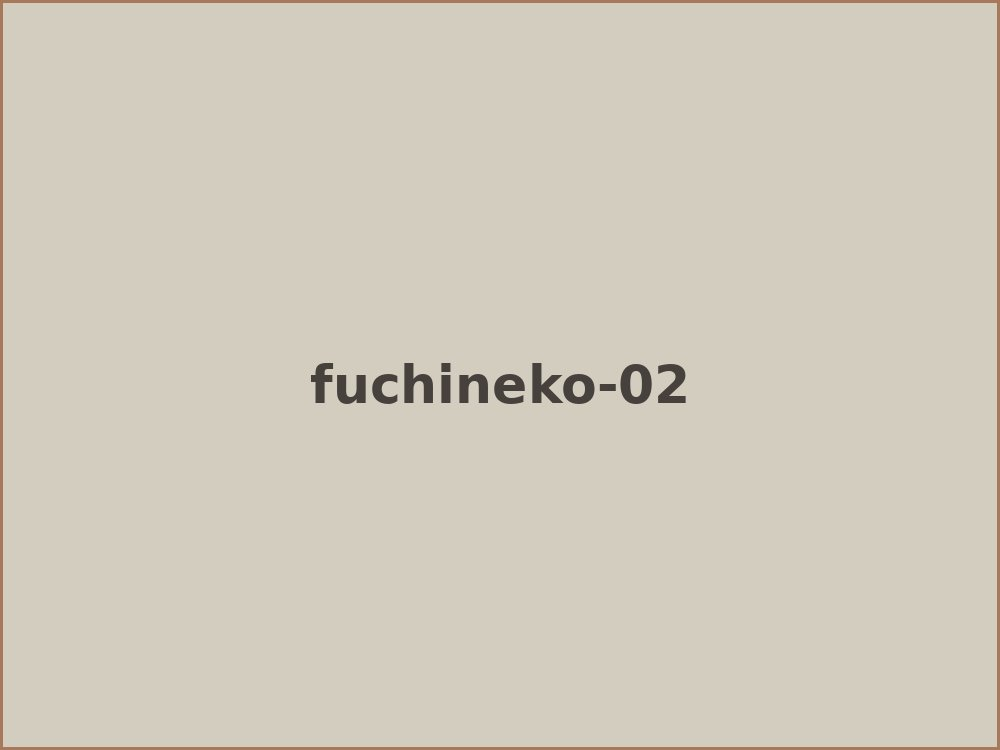
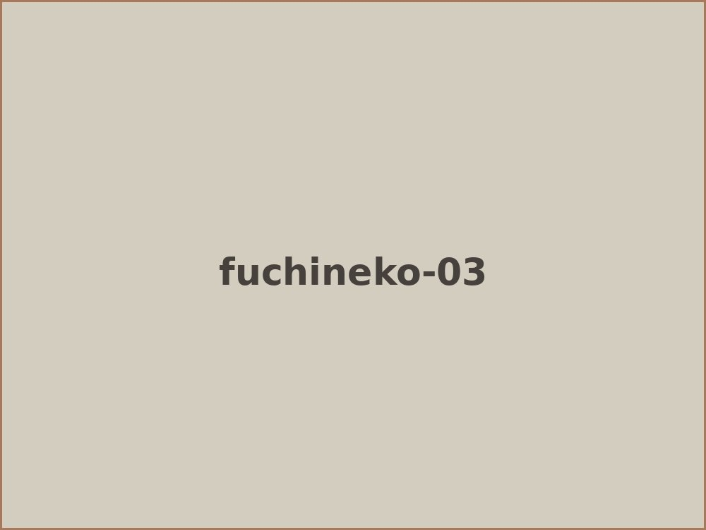
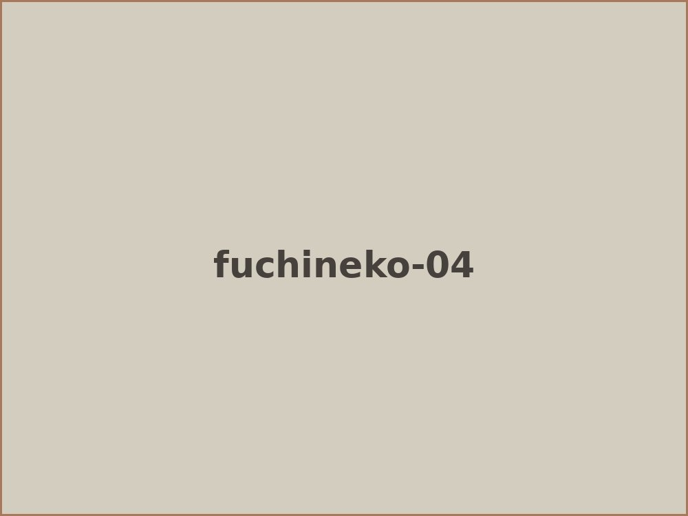
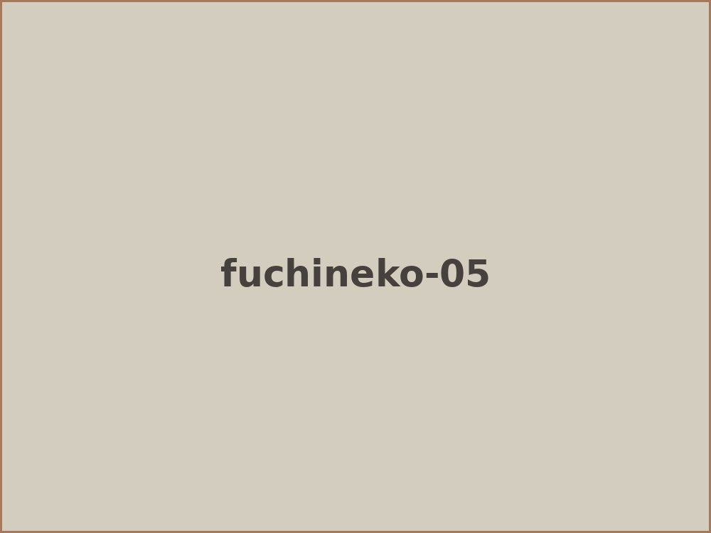
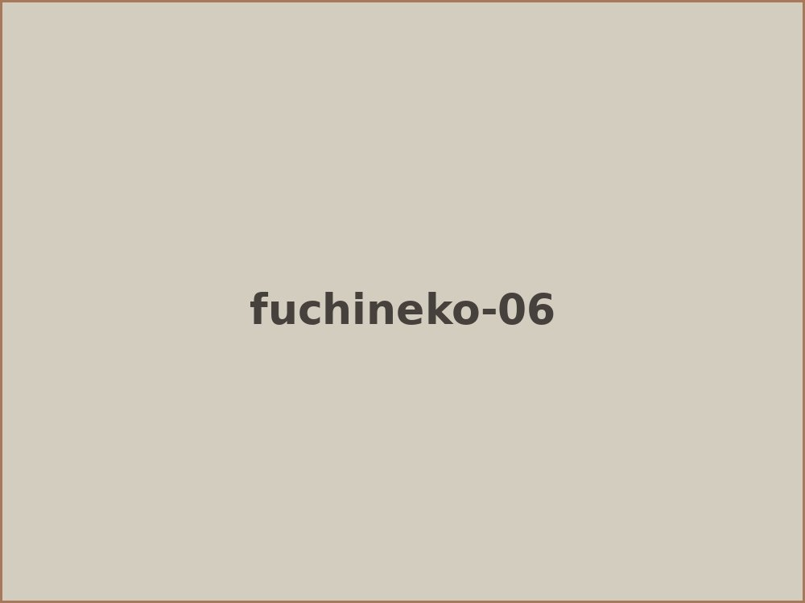
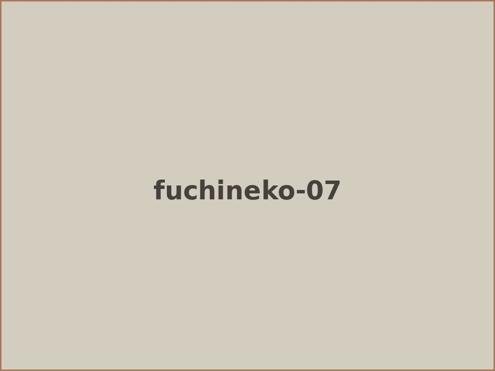
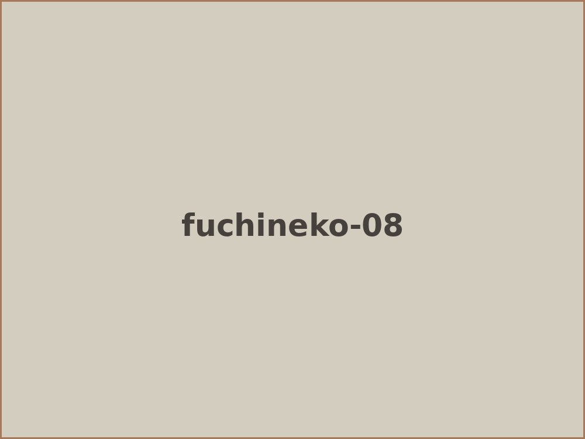
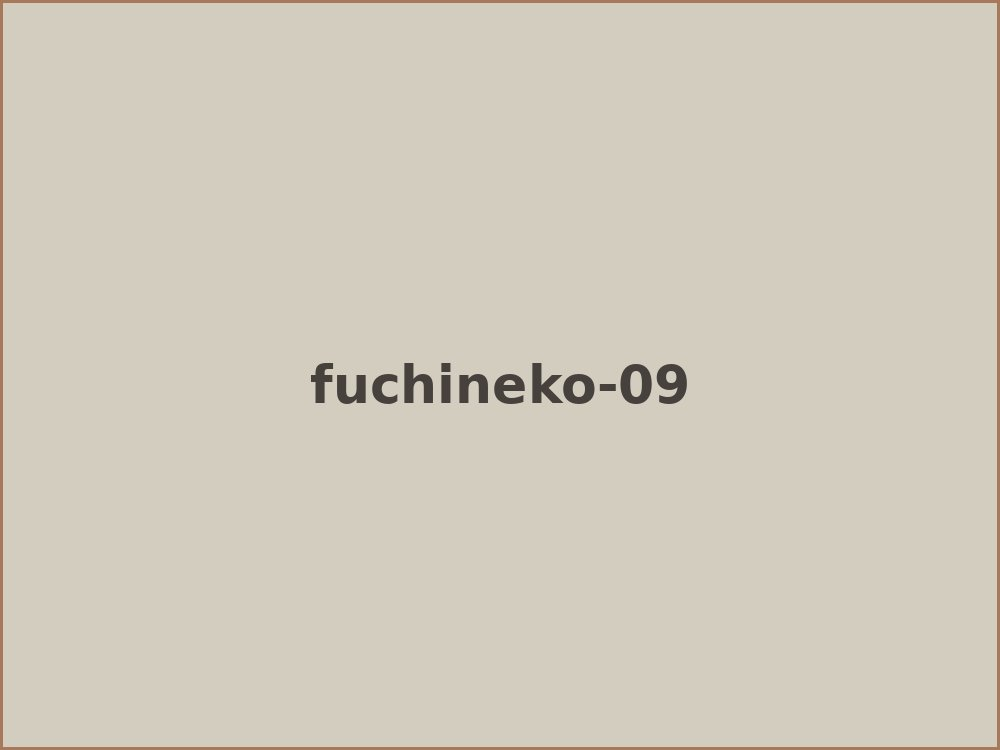

世の中に出回っている ふちねこ は、プラスチックでできているものが多いと思いますが、自分が作るものは陶器のふちねこです。
陶器のふちねこの作り方 ① 粘土で猫を作る ② 乾燥させる ③ 素焼き(800度位)をする。 ④ 釉薬を掛ける。 ⑤ 本焼き(1240度位)する。
大きくは、この五段階の工程を経て出来上がりです。個人的に難しいと思うのは、釉薬で色をつけるので、思うような猫らしい色付けなかなか出来ないんですね。
自分の場合、ネコの顔の表情などのこまかな所を作らずに全体のかたちをネコらしくする事に重きをおいているので、あまり一般受けしないかもしれません。





作る過程の写真は少ないですがこんな感じです。




こんな感じですが、陶器のふちねこは、テーブルに寝かせて箸置きとしても使えますし、汚れたら食器と同じように洗えるので便利です。ただ、陶器と同じように落とした場合は割れることもあるのでお気をつけ下さい。